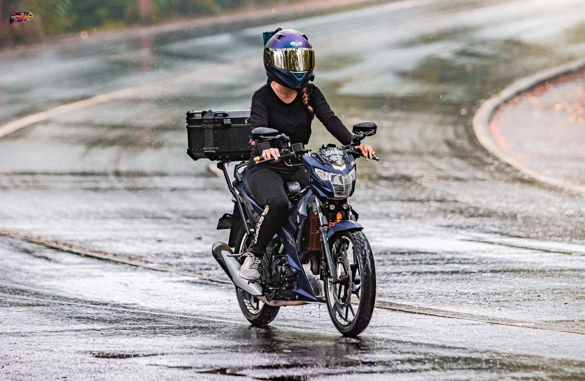
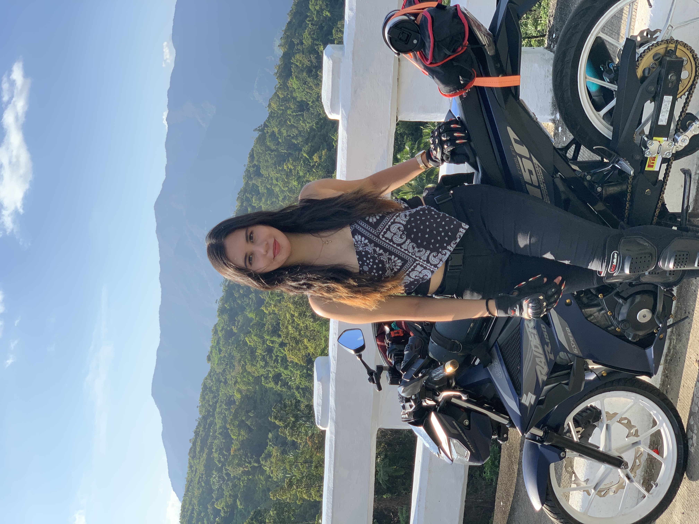
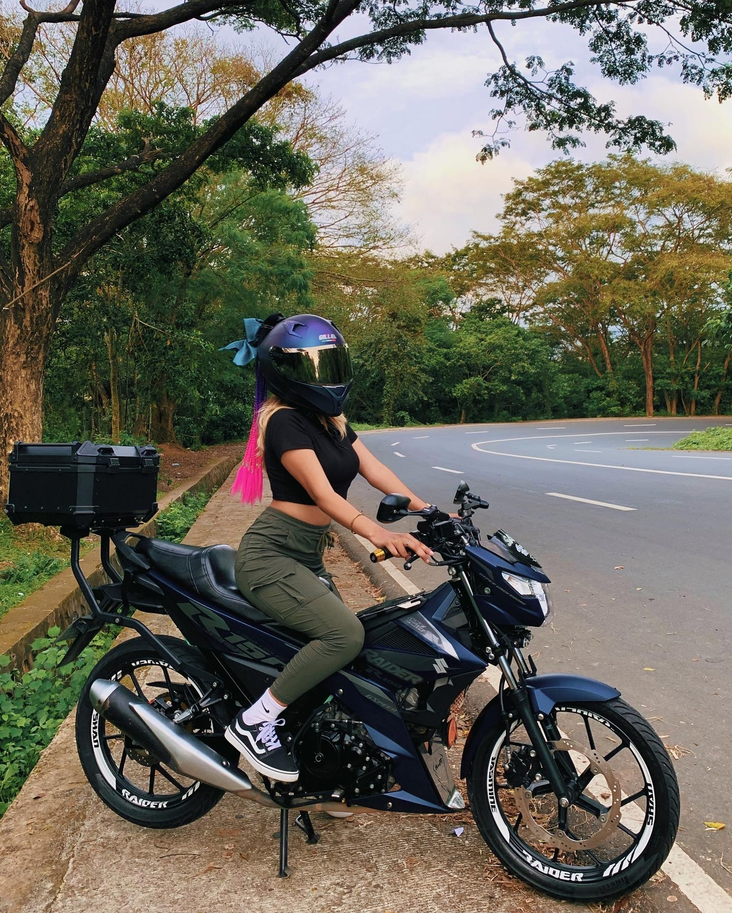
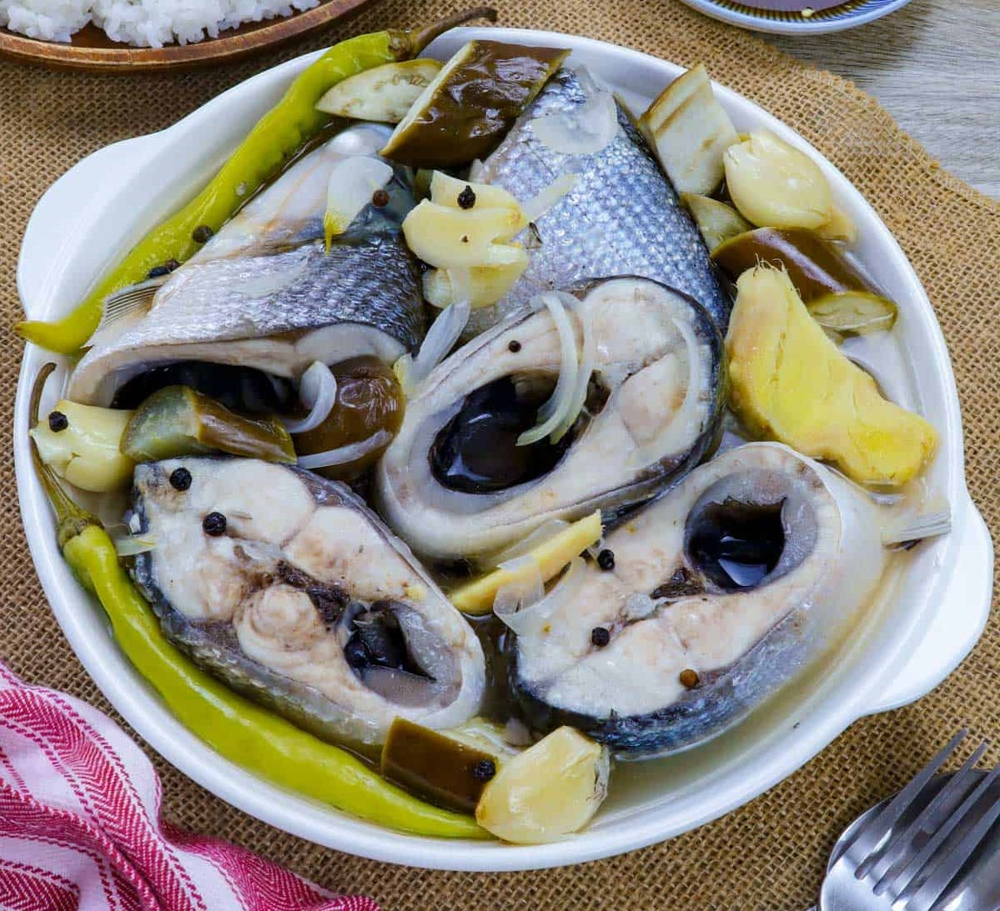
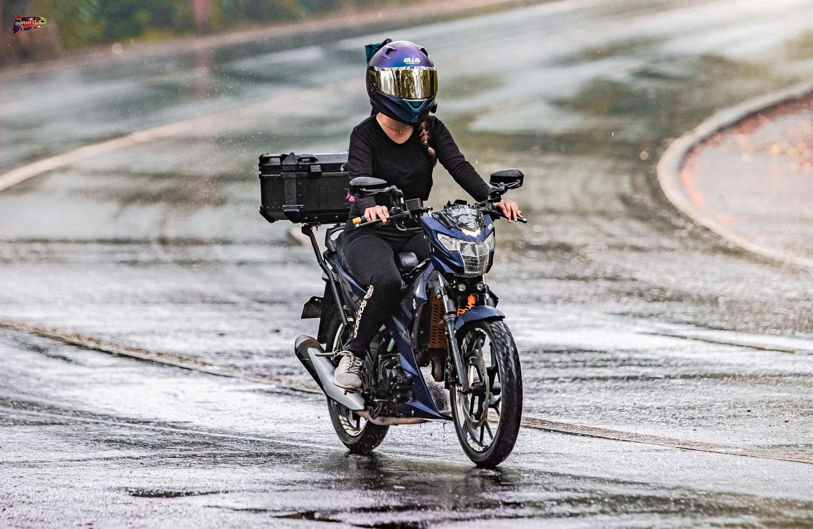
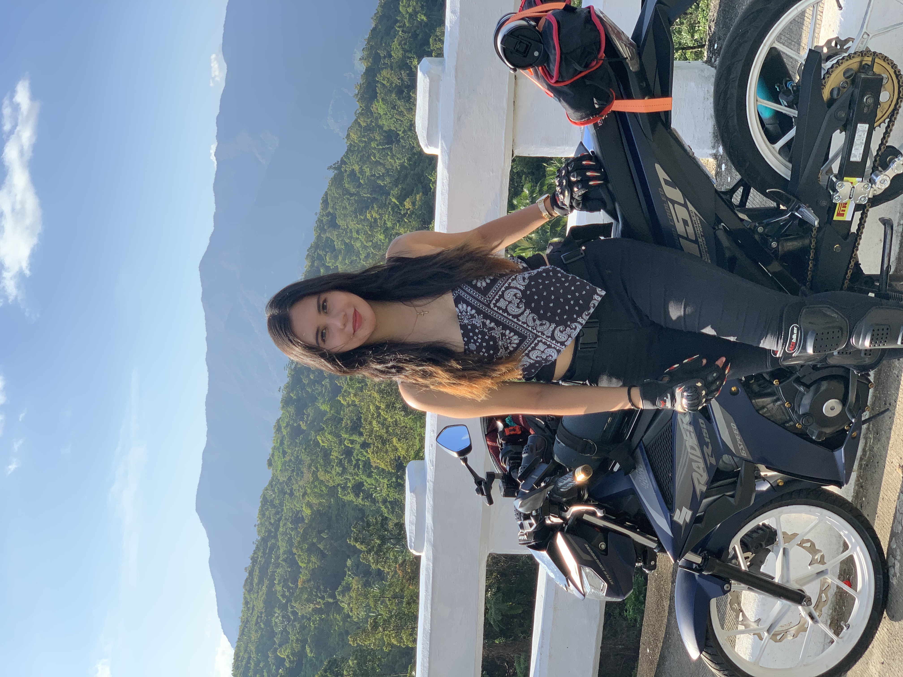
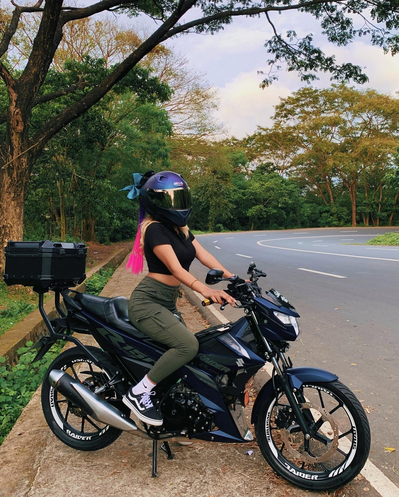
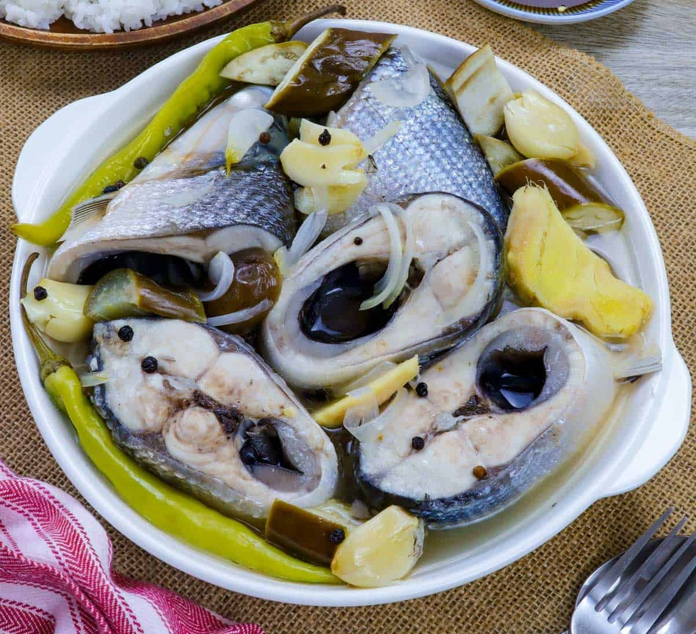

Hobbies
I love to travel...


I find joy in Motorcycling...
  And I like to cook...
Let me show you to a whole new world
Jasmine Sophia Lapidario was born in Quezon City and grew up in Mandaluyong City, where she currently resides. She is passionate about traveling and enjoys riding her motorcycle, reflecting her adventurous spirit and desire to explore new places and experiences.
Jasmine is currently pursuing a Bachelor of Science in Computer Engineering at the University of the East in Manila. Previously, she studied Architecture at Adamson University and completed her K-12 Senior High School education in STEM at Jose Rizal University.
In 2019, Jasmine entered the BPO industry, where she gained valuable experience as a Customer Service Representative, specializing in Customer Service, Chat Support, and Tech Support. She consistently achieved top performance and earned high KPI and QA scores.
I love to travel...
I find joy in Motorcycling...
  And I like to cook...
Feel free to reach out to me at my email and social media accounts